Manual d'Usuari¶
Índex¶
- Instal·lació
- Mode Local (GUI)
- Mode Docker (USB)
- Guia de cada mòdul
- Configuració de Telegram
- Informes generats
- Escenari del laboratori
- Resolució de problemes
Instal·lació¶
Opció A: Instal·lació local¶
# 1. Clonar el repositori
git clone https://github.com/jordicerv/projecte_ebresafe.git
# 2. Crear entorn virtual
python3 -m venv entorn
source entorn/bin/activate
# 3. Instal·lar dependències Python
pip install python-nmap requests dnspython ssh-audit
# 4. Instal·lar eines del sistema
sudo apt install -y nmap smbclient samba-common-bin
# 5. Instal·lar enum4linux (opcional)
git clone https://github.com/CiscoCXSecurity/enum4linux.git /tmp/enum4linux
sudo ln -sf /tmp/enum4linux/enum4linux.pl /usr/local/bin/enum4linux
sudo chmod +x /tmp/enum4linux/enum4linux.pl
Opció B: Instal·lació amb Docker¶
# 1. Construir la imatge
docker build -t auditoria_pendrive .
# 2. Executar directament
docker run -it --rm --network host \
-e DISPLAY="$DISPLAY" \
-v /tmp/.X11-unix:/tmp/.X11-unix \
-v $(pwd)/resultats:/app/dades \
auditoria_pendrive
| Paràmetre | Funció |
|---|---|
-it |
Mode interactiu |
--rm |
Esborra el contenidor en sortir |
--network host |
Utilitza la xarxa real del host (necessari per escanejar hosts reals) |
-v $(pwd)/resultats:/app/dades |
Persistència dels informes al host |
-e DISPLAY + -v /tmp/.X11-unix |
Permet obrir la GUI des de Docker |
Mode Local (GUI)¶
Iniciar l'eina¶
La interfície s'obre amb una finestra de 1420x920 píxels amb un disseny fosc professional. A l'esquerra hi ha el panell de navegació amb els presets d'escaneig (Xarxa, Ràpid, General, Harvester) i les opcions de Telegram. A la part central hi ha el camp per introduir l'objectiu (TARGET), el botó Run scan i les pestanyes de resultats (Summary, Findings, CVEs, Raw).
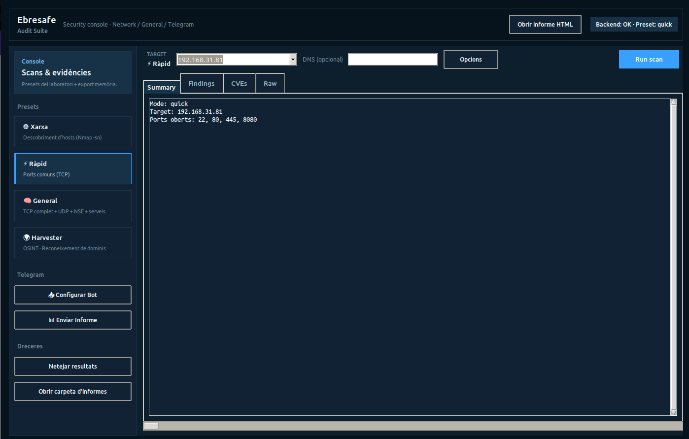
Elements de la interfície:
| Element | Funció |
|---|---|
| Presets (esquerra) | Xarxa, Ràpid, General, Harvester — seleccionen el mode d'escaneig |
| TARGET | Camp per introduir la IP o domini objectiu |
| DNS (opcional) | Camp per al domini DNS (per provar AXFR) |
| Opcions | Opcions avançades de l'escaneig |
| Run scan | Botó per llançar l'escaneig |
| Summary / Findings / CVEs / Raw | Pestanyes de resultats |
| Configurar Bot | Obre la configuració de Telegram |
| Enviar Informe | Envia l'informe via Telegram |
| Netejar resultats | Esborra la pantalla de resultats |
| Obrir carpeta d'informes | Obre la carpeta amb els informes generats |
Mode Docker (USB)¶
Preparació del USB (a casa)¶
Pas 1: Construir la imatge Docker i exportar-la al USB.
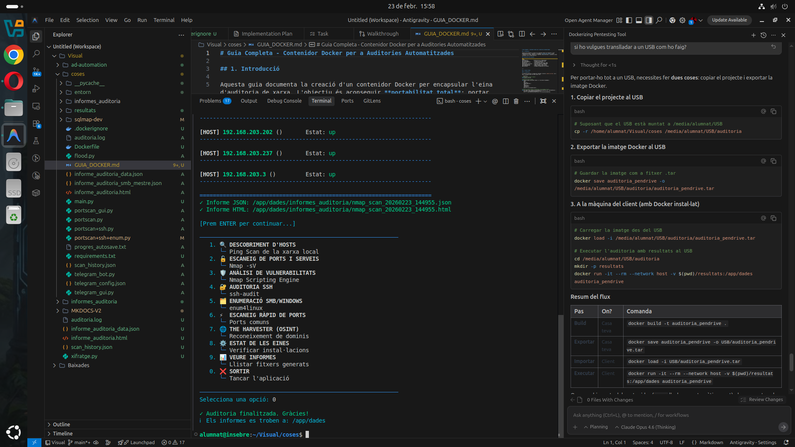
A la captura es veu l'entorn complet: VS Code amb l'estructura de fitxers, la guia Docker oberta, l'eina CLI executant-se al terminal amb el menú principal visible, i els informes generats.
Pas 2: Exportar la imatge Docker amb docker save:
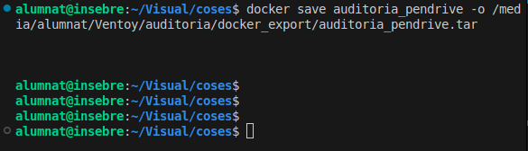
Pas 3: Copiar la carpeta del projecte al USB:
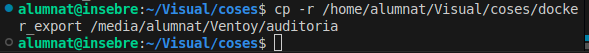
Execució al client¶
# 1. Connectar el USB
cd /media/.../docker_export
# 2. Donar permisos al llançador
chmod +x executar.sh
# 3. Executar
./executar.sh
El script executar.sh fa el següent automàticament:
- ✅ Comprova que Docker està instal·lat
- ✅ Comprova permisos
- ✅ Carrega la imatge des del
.tarsi cal - ✅ Crea la carpeta
resultats/ - ✅ Detecta si hi ha
telegram_config.json - ✅ Decideix entre mode GUI (si hi ha pantalla) o mode terminal
graph LR
subgraph "A casa"
A[docker build] --> B[docker save]
B --> C[Copiar al USB]
end
subgraph "Al client"
D[docker load] --> E[./executar.sh]
E --> F{Pantalla?}
F -->|Sí| G[GUI tkinter]
F -->|No| H[CLI terminal]
G & H --> I[Informes a resultats/]
end
C -->|USB| DGuia de cada mòdul¶
1. Preset Xarxa — Descobriment d'hosts¶
Què fa: Escaneja la subxarxa local per trobar dispositius actius (ping scan amb nmap -sn).
Com utilitzar-lo:
- Seleccionar el preset Xarxa al panell esquerre
- Clicar Run scan
- L'eina calcula automàticament la subxarxa /24 de la interfície activa
- Es mostra una llista dels hosts trobats amb la seva IP i estat
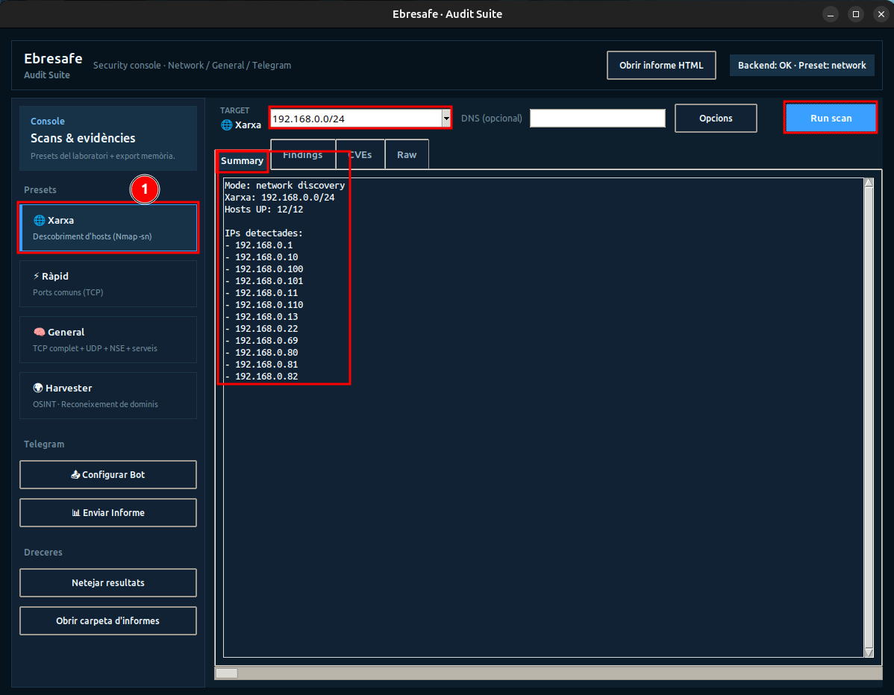
A la captura es veu el resultat del descobriment de xarxa: 12 hosts actius detectats, incloent els servidors del laboratori (192.168.0.100, 192.168.0.101) i la VIP (192.168.0.110).
2. Preset Ràpid — Escaneig ràpid de ports¶
Què fa: Escaneig ràpid per sockets (sense nmap) dels ports més comuns: 21, 22, 23, 25, 53, 80, 110, 143, 443, 445, 3306, 3389, 5432, 8080.
Com utilitzar-lo:
- Seleccionar el preset Ràpid
- Introduir la IP objectiu
- Clicar Run scan
- Es mostren els ports oberts trobats
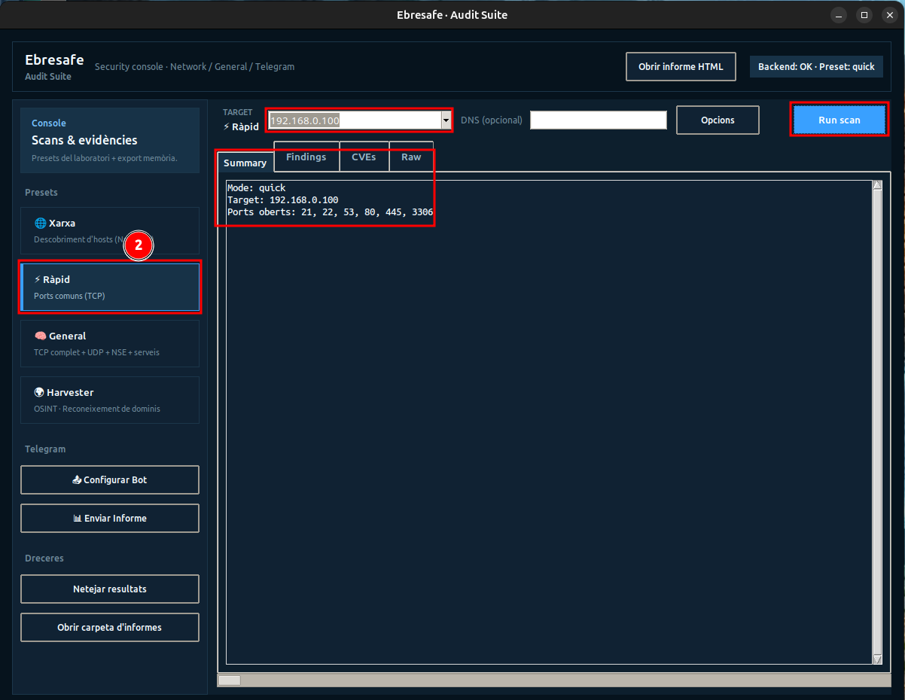
A la captura es veu l'escaneig ràpid del servidor primari amb 6 ports oberts detectats, incloent el port 3306 (MariaDB) i el 445 (SMB) que més tard es corregiran.
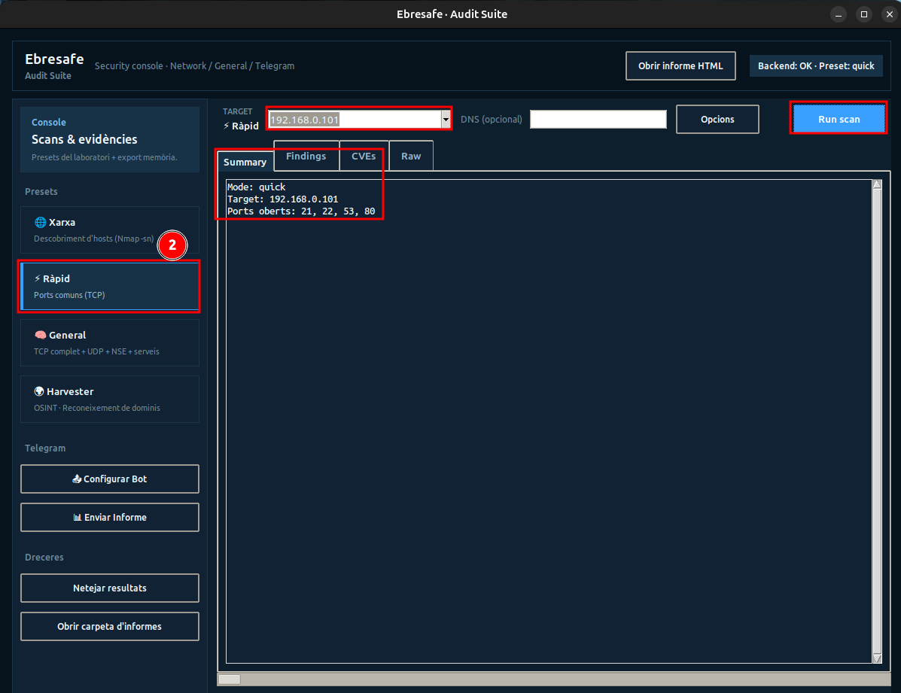
Al servidor secundari (després de les correccions) es detecten 4 ports oberts. Noteu que el port 3306 ja no apareix (MariaDB restringit a localhost) i el 445 tampoc (SMB securitzat).
3. Preset General — Escaneig complet¶
Què fa: Auditoria profunda que inclou:
- Escaneig TCP complet de tots els 65535 ports (
-p-) - Escaneig UDP dels ports més comuns
- Scripts NSE (vulners, ftp-anon, smb-enum-shares, etc.)
- Detecció de CVEs amb puntuació CVSS
- Checklist automàtic del laboratori
Com utilitzar-lo:
- Seleccionar el preset General
- Introduir la IP objectiu
- Opcionalment, introduir un domini DNS per provar AXFR
- Clicar Run scan
Temps d'execució
L'escaneig general pot trigar diversos minuts depenent de la xarxa i el nombre de ports oberts.
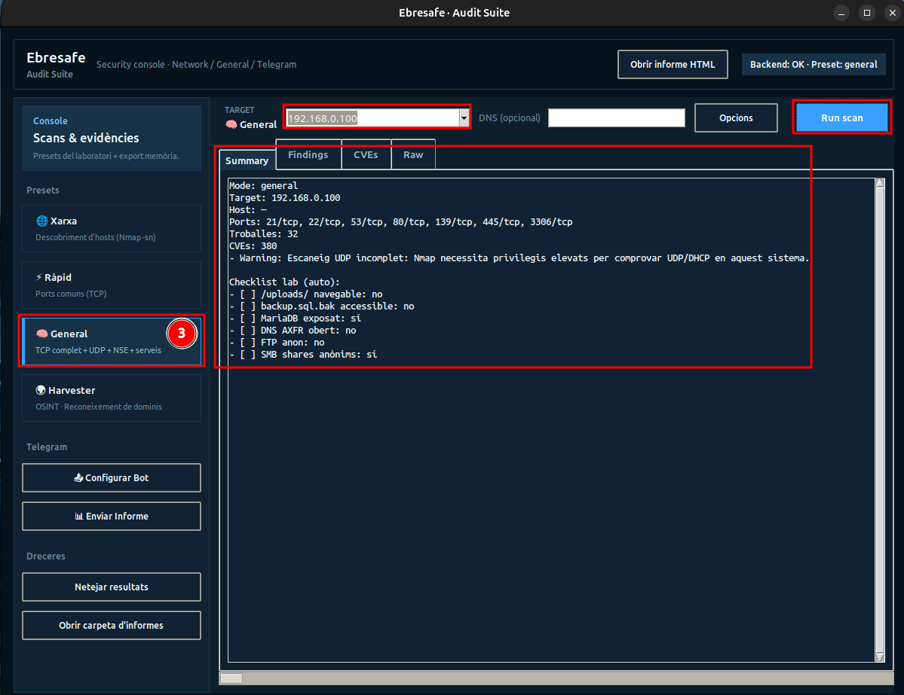
A la captura del servidor primari (abans de correccions) es veu:
- Ports detectats: 21/tcp, 22/tcp, 53/tcp, 80/tcp, 139/tcp, 445/tcp, 3306/tcp
- 32 troballes de seguretat identificades
- 380 CVEs associades als serveis detectats
- Checklist del laboratori: MariaDB exposat (sí), SMB shares anònims (sí)
Pestanya CVEs¶
Després de l'escaneig general, la pestanya CVEs mostra una taula amb totes les vulnerabilitats conegudes detectades, ordenades per puntuació CVSS (de més crític a menys):
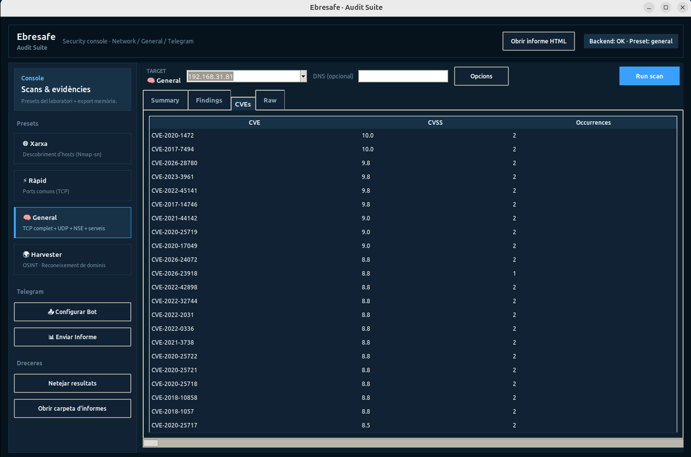
A la captura es veuen CVEs amb puntuacions de 10.0 (CVE-2020-1472, CVE-2017-7494) fins a 8.5, afectant serveis als ports 139 i 445. Cada fila mostra l'identificador CVE, la puntuació CVSS i el nombre d'ocurrències.
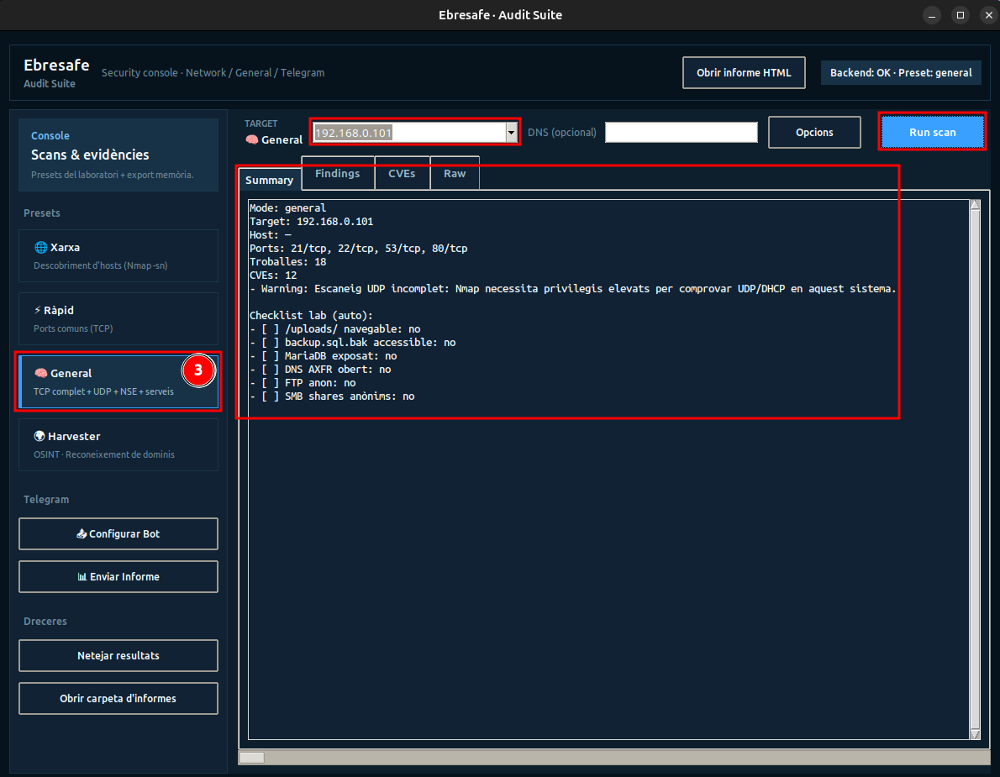
Al servidor secundari (després de correccions) es veu la millora:
- Ports detectats: 21/tcp, 22/tcp, 53/tcp, 80/tcp (sense 139, 445 ni 3306)
- 18 troballes (vs 32 anteriors)
- 12 CVEs (vs 380 anteriors — una reducció del 97%)
- Checklist: Tot en no — totes les vulnerabilitats del laboratori han estat corregides
Comparativa abans/després
Aquestes dues captures demostren l'eficàcia del procés de bastionament documentat a la secció Correcció de vulnerabilitats.
4. Preset Harvester — OSINT¶
Què fa: Reconeixement de dominis públics mitjançant theHarvester. Busca:
- Correus electrònics associats
- Subdominis
- IPs públiques
- Informació pública disponible a motors de cerca
Fonts disponibles: all, bing, google, yahoo, duckduckgo, baidu, virustotal
Com utilitzar-lo:
- Seleccionar el preset Harvester
- Introduir el domini objectiu al camp TARGET (ex:
insebre.cat) - Opcionalment, introduir la font al camp Font (per defecte:
all) - Clicar Run scan
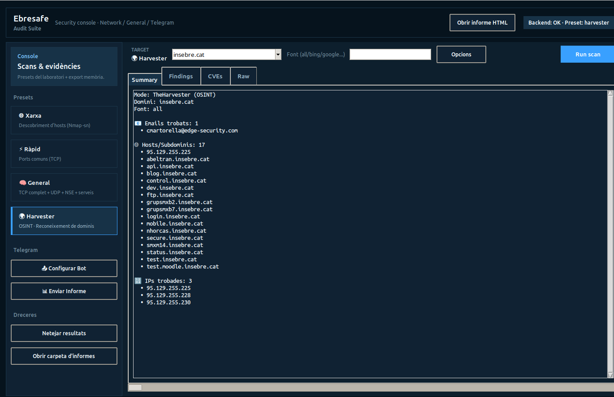
A la captura es pot veure el resultat d'un escaneig Harvester contra insebre.cat:
- 1 email trobat: cmartorella@edge-security.com
- 17 hosts/subdominis trobats: abeltran.insebre.cat, api.insebre.cat, blog.insebre.cat, control.insebre.cat, dev.insebre.cat, ftp.insebre.cat, etc.
- 3 IPs trobades: 95.129.255.225, 95.129.255.228, 95.129.255.230
Configuració de Telegram¶
Crear un bot de Telegram¶
- Obre Telegram i cerca @BotFather
- Envia
/newboti segueix les instruccions - Guarda el token que et dona el BotFather
- Per obtenir el Chat ID:
- Afegeix el bot al grup o inicia una conversa privada
- Envia qualsevol missatge al bot
- Visita:
https://api.telegram.org/bot<TOKEN>/getUpdates - Busca
"chat":{"id": XXXXXXX}
Configuració des de la GUI¶
Clicant el botó Configurar Bot al panell esquerre s'obre la finestra de configuració:
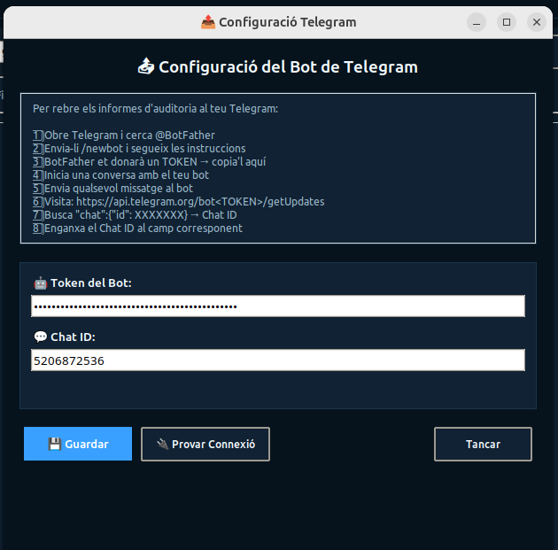
La finestra inclou:
- Instruccions pas a pas (1-8) per obtenir el token i el chat ID
- Camp Token del Bot — On enganxar el token de BotFather
- Camp Chat ID — L'identificador del xat de destinació
- Botó Guardar — Desa la configuració a
telegram_config.json - Botó Provar Connexió — Verifica que el bot funciona enviant un missatge de prova
Mètodes de configuració¶
| Prioritat | Mètode | Detalls |
|---|---|---|
| 1 (màxima) | Variables d'entorn | TELEGRAM_BOT_TOKEN i TELEGRAM_CHAT_ID |
| 2 | Fitxer JSON | telegram_config.json |
| 3 | GUI | Botó "Configurar Bot" dins de l'aplicació |
Fitxer de configuració¶
Amb Docker¶
Si detecta telegram_config.json a la carpeta d'execució, el munta automàticament al contenidor:
docker run -it --rm --network host \
-v $(pwd)/resultats:/app/dades \
-v $(pwd)/telegram_config.json:/app/telegram_config.json \
auditoria_pendrive
Enviament d'informes per Telegram¶
Un cop configurat el bot, es poden enviar els informes d'auditoria directament a Telegram clicant Enviar Informe. El bot envia:
- Un missatge amb el resum de les troballes (CVEs, severitats, recomanacions)
- El fitxer HTML complet com a document adjunt
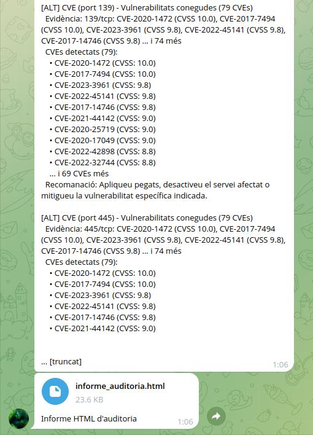
A la captura del xat de Telegram es veu:
- Llistat de CVEs detectats amb les seves puntuacions CVSS (fins a 10.0)
- Recomanacions de seguretat
- El fitxer
informe_auditoria.htmlenviat com a document (23.6 KB)
Seguretat
Mai publiqueu el token del bot ni el chat_id en repositoris públics. Afegiu telegram_config.json al .gitignore.
Informes generats¶
L'eina genera informes en tres formats:
Informe JSON¶
Conté totes les dades estructurades: ports, troballes, CVEs, detalls de servei, resum per severitats.
Informe HTML¶
Informe visual amb CSS modern. Conté:
- Resum de ports oberts i serveis
- Taula de ports detectats
- Troballes per severitat amb colors
- CVEs amb enllaços a NVD
- Recomanacions de seguretat
Taula CSV per a memòria¶
Format tabular amb columnes: servei | node | vulnerabilitat | evidència | risc | recomanació. Ideal per importar a un full de càlcul.
Informe unificat HTML¶
A més, la GUI manté un informe HTML acumulatiu (informe_auditoria.html) que consolida totes les auditories executades en una sola pàgina amb disseny modern i gràfics.
Escenari del laboratori¶
L'eina s'ha provat en un escenari de laboratori amb alta disponibilitat:
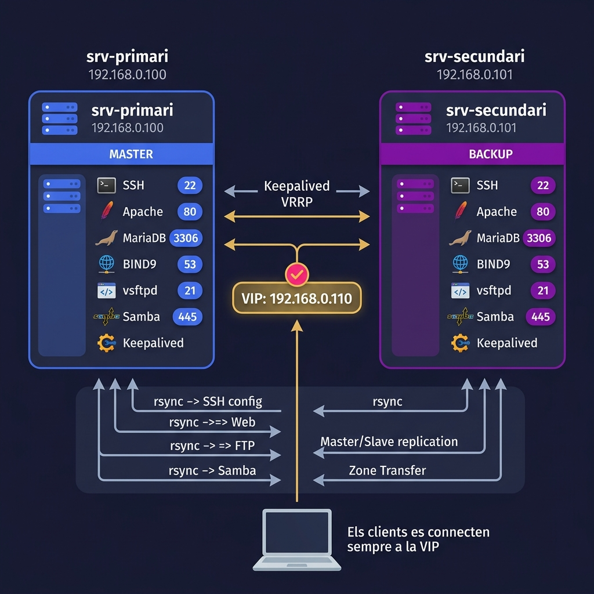
L'escenari inclou:
- srv-primari (192.168.0.100) — MASTER amb SSH, Apache, MariaDB, BIND9, vsftpd, Samba i Keepalived
- srv-secundari (192.168.0.101) — BACKUP amb els mateixos serveis
- VIP 192.168.0.110 — IP virtual gestionada per Keepalived (VRRP)
- Sincronització via rsync, replicació Master/Slave (MariaDB) i Zone Transfer (DNS)
Resolució de problemes¶
| Problema | Solució |
|---|---|
python-nmap no instal·lat |
pip install python-nmap |
nmap no trobat |
sudo apt install nmap |
enum4linux no disponible a apt |
Instal·lar des de GitHub: git clone https://github.com/CiscoCXSecurity/enum4linux.git + symlink |
theHarvester v0.0.1 a PyPI |
Instal·lar des de GitHub: pip install git+https://github.com/laramies/theHarvester.git |
aiodns requires Python >= 3.10 |
Actualitzar a python:3.12-slim al Dockerfile |
nmap no detecta hosts reals dins Docker |
Afegir --network host al docker run |
La GUI no s'obre dins Docker |
Cal X11 forwarding: -e DISPLAY=$DISPLAY -v /tmp/.X11-unix:/tmp/.X11-unix |
Error enviant a Telegram |
Verificar token i chat_id. Provar connexió primer amb el botó "Provar Connexió" |
Informes vells s'acumulen |
Utilitzar el botó "Netejar resultats" de la GUI |